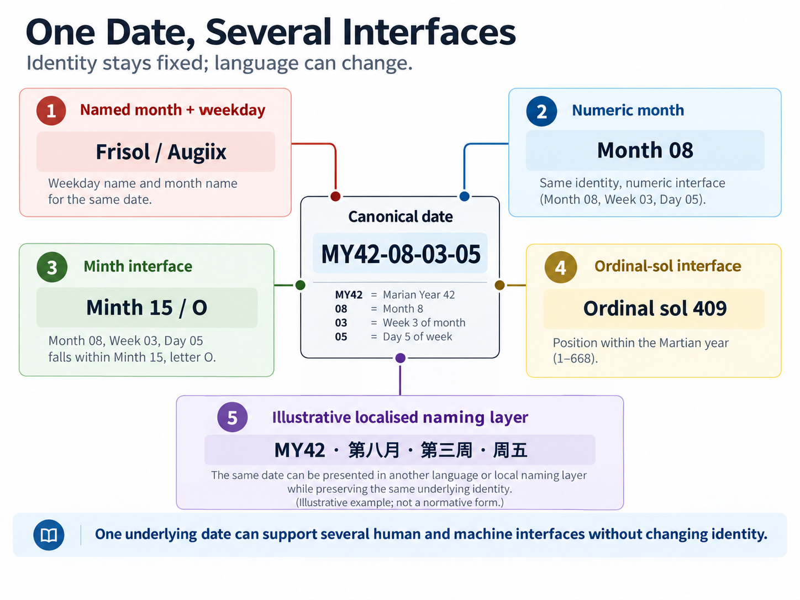

IDENTITY
15) A Date That Survives Translation
Dates, Names and Machine Identity
A calendar has two audiences.
People need dates they can read, say and remember. Machines need dates they can identify without ambiguity, regardless of language, typography or local custom. Those requirements overlap, but they are not the same.
A future Martian resident may be perfectly happy saying that an appointment falls on Frisol in Augiix. A database exchanging records between settlements should not need to know what Augiix means, what language the user speaks or whether that community has renamed the month entirely.
Marian therefore separates structure from vocabulary. The underlying calendar is numeric and deterministic; human-facing names sit on top as an interface.
That is more than a software convenience. A calendar intended to serve a civilisation should survive translation, cultural change and the entirely reasonable possibility that future Martians dislike some of the names invented for them on Earth.
The machinery should not care.
The canonical civil date
The primary Marian Civil Date contains four components:
Year · Month · Week · Day
Its structural form is:
(Y, M, W, D)
A canonical machine-readable example is:
MY42-08-03-05
This means Marian Year 42, Month 8, Week 3 within that month, and Day 5 within that week. Under Marian's recommended weekday names, Day 5 is Frisol.
The same civil date can therefore appear in several human-facing forms, such as:
42 Augiix · Week 3 · Frisol
or:
MY42 · Month 8 · Week 3 · Day 5
These are not different dates. They are different representations of the same structural address.
The Year–Month–Week–Day form is deliberate. Marian months already have a stable eight-position weekly structure, so the date exposes that structure directly rather than hiding the week inside an ordinal month-day number.
The easiest way to think about the civil date is as an address:
MY42-08-03-05
means:
Year 42 → Month 08 → Week 03 → Day 05
Because every month begins at Day 1, that relationship is stable. Month 8, Week 3, Day 5 does not happen to be Frisol in MY42. It is Day 5 by construction, and the same structural position remains Day 5 in MY43, MY44 and every other year in which that date is valid.
That invariance is one reason Marian uses a four-part civil address rather than simply copying the Gregorian Year–Month–Day pattern.
For everyday speech, of course, nobody needs to recite the complete tuple whenever they arrange coffee. Standards and conversation have different bandwidth requirements.
Invalid dates should be invalid on purpose
A machine-readable date system also needs an unambiguous definition of dates that do not exist.
Every Marian month contains eight nominal week positions. A 56-sol month fills all seven weekday positions of Week 8; a 55-sol month ends after Week 8, Day 6.

Detailed figure description
Six boxes present the same example date at different interface levels. They include the complete Marian date, its month and weekday position, its minth position, its ordinal position in the year, and a human-readable notation. Directional relationships show that these are alternative descriptions of the same civil sol, not different dates. The example is an illustration of stable structural identity under varied formatting.
Editorial note: this is a descriptive summary, not an independently verified transcription of every diagram label. Refer to the surrounding text and the Marian technical specification for authoritative numeric details where applicable.
So:
MY2-03-08-06
is valid, while:
MY2-03-08-07
is not.
Month 3 contains only 55 sols, so there is no Week 8, Day 7 in that month. The same rule applies to Month 12: its final Day 7 exists in a leap year but not in a common year.
Validation is therefore mechanical:
- Month must be 01–12.
- Week must be 01–08.
- Day must be 01–07.
- The resulting position must fall within the actual length of that month.
This matters because invalidity should belong to the calendar specification rather than being reinvented by every programmer who encounters it. A date parser should know that a particular address cannot occur, and a recurrence system should know that a schedule requesting Week 8, Day 7 needs a rule for months in which that position is absent.
That is the sort of detail nobody puts on a wall calendar and everybody eventually wishes somebody had specified.
The ordinal-sol form
Not every application needs the full civil address. Sometimes the useful question is simply:
Which sol of the year is this?
Marian therefore also supports a year-plus-ordinal-sol representation. For example:
MY42-S409
means the 409th sol of Marian Year 42.
The civil date:
MY42-08-03-05
maps to:
MY42-S409
Both identify the same physical civil sol. The ordinal form is useful for computation, elapsed-time arithmetic, scientific records and systems that do not need to expose the richer month-and-week structure.
A common year runs from MYxx-S001 to MYxx-S668. A leap year continues to MYxx-S669. The ordinal identity always restarts with the Marian year.
That last point matters because another Martian coordinate already uses very similar terminology.
Marian ordinal sol is not Mars Sol Date
Mars Sol Date, usually abbreviated MSD, is an established continuous count of Martian solar days used in scientific timekeeping. It does not restart at Marian New Year, is not organised into Marian months or weeks, and is not the same thing as MY42-S409.
The distinction is simple:
| System | Example | What it represents |
|---|---|---|
| Marian Civil Date | MY42-08-03-05 | Civil year, month, week and day |
| Marian ordinal sol | MY42-S409 | Sol 409 within Marian Year 42 |
| Mars Sol Date | MSD … | Continuous scientific Martian sol count |
The similarity of terminology is unfortunate but manageable. Calling a Marian ordinal date an “MSD” would not be harmless shorthand; it would collapse two different coordinates into one label.
Marian Civil Date and Mars Sol Date are different systems.
One provides a civil address. The other provides a continuous scientific count. They can coexist because they answer different questions.
Names are an interface
The structural weekday positions are simply Day 1 through Day 7. Marian recommends the following human-facing names:
| Position | Recommended name |
|---|---|
| D1 | Monsol |
| D2 | Tuesol |
| D3 | Wedsol |
| D4 | Thursol |
| D5 | Frisol |
| D6 | Satsol |
| D7 | Sunsol |
The principle is recognition without equivalence.
The familiar stems make the sequence immediately legible to many Earth-origin users, while the -sol ending signals that these are Martian civil weekdays built around Martian sols, not terrestrial Mondays and Tuesdays transferred unchanged.
A Monsol is not literally a Monday transported to Mars. Its physical day is different, and Marian's weekday sequence has different boundary behaviour. The familiar stem helps recognition; the changed form warns against false equivalence.
Whether people ultimately like these names is a human-interface question. The mathematics does not depend on them. Day 5 remains Day 5 if a future community calls it Frisol, translates it or replaces the word entirely.
The same principle applies to the twelve months:
| Month | Recommended name |
|---|---|
| 01 | Janiix |
| 02 | Febiix |
| 03 | Mariix |
| 04 | Apriix |
| 05 | Mayiix |
| 06 | Juniix |
| 07 | Juliix |
| 08 | Augiix |
| 09 | Sepiix |
| 10 | Octiix |
| 11 | Noviix |
| 12 | Deciix |
The stems deliberately preserve the familiar January-to-December ordering. The altered forms signal that these are not terrestrial months. A Janiix lasts 55 or 56 sols, not 31 Earth days.
The stylised -iix suffix is intended partly to distinguish the Marian form visually and to echo the nominal eight-week structure of the month. It is not a Roman numeral. Eight in standard Roman notation is VIII, not IIX.
That clarification may sound absurdly specific until one remembers that any unusual typography introduced into a standard will eventually generate several thousand confident explanations on the internet about what the designer “obviously meant”.
So:
-iix is a stylised suffix.
Nothing more mysterious is hiding inside it.
Marian could instead have invented twelve entirely new month names, and there is a respectable argument for doing so. A 56-sol Martian month is sufficiently different from an Earth month that any resemblance to January or August may create confusion as well as familiarity.
The proposed names give some weight to transition. An early Martian population would already know a twelve-position annual sequence, so retaining recognisable stems means the ordering need not be learnt from scratch. Janiix is visibly first, Augiix eighth and Deciix closes the year.
The modification is intended to preserve recognition while signalling difference. Whether it succeeds is unproven. Some users may find the names helpful; others may conclude that they are slightly tortured Earth months wearing space helmets.
Both reactions would be useful evidence.
The important architectural point is that neither reaction affects the calendar itself.
Month 08 remains Month 08.
A community may call it Augiix, transliterate it, translate it or replace the name completely. The structural identity survives.
This is where machine identity matters most. An English-language application might display:
Frisol, Week 3, Augiix, MY42
Another community might use completely different words. Both can still exchange:
MY42-08-03-05
The database key does not have to share the label on the screen.
Not romantic. Very useful.
Minths need a different naming strategy
The minth presents a harder interface problem because there are twenty-four of them. Giving every minth a mandatory independent proper name would ask users to memorise twice as many annual positions as the familiar twelve-month sequence.
Marian therefore begins with the least glamorous and most durable solution:
01 through 24
These are the canonical minth identities. Minth 01 is always the first minth of the year and Minth 24 always the last. The structure is transparent because each month contains two consecutive minths:
Month 01 → Minths 01–02
Month 02 → Minths 03–04
Month 03 → Minths 05–06
…
Month 12 → Minths 23–24
Those numbers are sufficient for software, archives, formal schedules and interoperability.
For more compact human use, Marian recommends a second layer:
A through X
The mapping is direct:
A = 01
B = 02
C = 03
…
X = 24
So:
MY42 · Minth Q
is shorthand for:
MY42 · Minth 17
The alphabetic sequence has a useful mnemonic quality because it exposes both order and grouping. Months become:
AB · CD · EF · GH · IJ · KL · MN · OP · QR · ST · UV · WX
Quarters become:
ABCDEF · GHIJKL · MNOPQR · STUVWX
Sixths become:
ABCD · EFGH · IJKL · MNOP · QRST · UVWX
A–X therefore gives the human interface more than twenty-four arbitrary labels. It makes the architecture visible.
But it remains an interface. The Latin alphabet is not part of the mathematics. A community using another script could adopt its own ordered shorthand while continuing to exchange Minth 17 with everybody else.
The distinction Marian tries to preserve is:
01–24 = canonical identity
A–X = recommended shorthand
proper names = optional vocabulary
An illustrative naming layer
A reference vocabulary can still be useful, provided it is understood as an interface rather than part of the underlying mathematics. One possible English-language sequence follows the A–X shorthand:
Aurex · Bloomox · Clearex · Dewdrox · Evolvex · Florax · Glintrex · Humidox · Ignitex · Jettox · Kindlex · Lumax · Magnex · Nudgox · Opulex · Pausox · Questex · Rumax · Silvex · Threnox · Umbriex · Velcrox · Winterex · Xenax
The names are deliberately suggestive rather than prescriptive. Their initial letters preserve the A–X ordering, so somebody hearing Lumax or Threnox can still recover something about its position without memorising an entirely arbitrary list of twenty-four terms.
They are also deliberately expendable. A future Martian community might adopt them, modify them or reject the lot. None of those outcomes changes Minth 12 or Minth 20 underneath.
The final minth provides one optional flourish. In the reference vocabulary, Xenax denotes its ordinary 27-sol form and Xenex its 28-sol leap-year form. Whether people find that distinction useful is a linguistic question rather than a structural one. In both cases, the machine identity remains simply Minth 24.
That is enough naming for a specification written before the people who might eventually use it have even arrived.
If such names become natural in ordinary speech, excellent. If future communities replace them, the machine layer remains unchanged.
Minth 24 also demonstrates why structural identity should not depend on natural-language labels. In a common year it contains 27 sols; in a leap year the final Sunsol extends it to 28. Its identity does not change. It remains Minth 24, or Minth X using the recommended shorthand.
The larger principle is simple: language may describe variation without becoming the key on which the data model depends.
Twenty-four names are not unprecedented
Nor is a named sequence of twenty-four annual positions quite as strange as it may initially sound to an English-speaking reader.
Chinese calendrical tradition already contains the Twenty-Four Solar Terms: 二十四节气 (èrshísì jiéqì). This is a sequence of named seasonal markers distributed through the terrestrial annual solar cycle. They are not months, and they are not equivalent to Marian minths. The jiéqì are astronomical and seasonal terms rooted in the Sun's apparent annual motion; Marian minths are approximately equal-duration civil intervals. The comparison is therefore cultural and structural, not astronomical.
But the precedent is useful. A civilisation can become perfectly comfortable navigating an annual cycle through twenty-four named positions rather than twelve.
A future Sinophone Martian community could therefore build its own naming layer on top of the same canonical Minths 01–24. One deliberately illustrative adaptation developed during the design work was:
Aihan · Bahan · Chunli · Dushui · Ezhe · Fenhua · Guanming · Huyu · Ignixia · Jiman · Kangzhong · Luxia · Mushu · Nushu · Oqiu · Pushu · Qilou · Runfen · Silu · Tongjiang · Undong · Vaxue · Wanxue · Xianzhi
Those names are not proposed as the Chinese names of the Marian Calendar. That decision would belong to future Chinese-speaking users, not to an English-language specification written on Earth. Their value here is simply demonstrative: the same Minth 01–24 structure can support a culturally different human vocabulary without changing a single date underneath it.
That is exactly what localisation should mean.
One date, several legitimate views
Human-readable and machine-readable dates are not rival systems. Modern civil infrastructure requires both.
A legal contract may display a friendly date while storing a normalised representation underneath. A hospital interface may show weekday and month names to a clinician while transmitting numeric fields to another system. A transport application may localise every visible label while its API exchanges only canonical identities.
Marian can therefore represent the same civil position in several legitimate ways:
| Purpose | Example |
|---|---|
| Canonical structure | Year 42 · Month 08 · Week 03 · Day 05 |
| Machine form | MY42-08-03-05 |
| Human civil form | 42 Augiix · Week 3 · Frisol |
| Ordinal-sol form | MY42-S409 |
| Minth shorthand | MY42 · Minth Q |
These are views of one underlying calendar. The important requirement is deterministic conversion among them. Moving a date from a database to a human interface should not change what date it is.
What Marian actually standardises
The line between structure and interface can now be drawn clearly.
The formal Marian structure includes:
- Marian year identity;
- Months 01–12;
- Weeks 01–08 within a month;
- Days 01–07 where valid;
- Minths 01–24;
- deterministic mapping among those units;
- common- and leap-year validity rules;
- the Year–Month–Week–Day civil tuple;
- the year-plus-ordinal-sol representation.
Those are part of the calendar machinery.
Human-facing vocabulary is more adaptable. That includes Monsol through Sunsol, Janiix through Deciix, A through X for minths, proposed natural-language minth names, and localised or future names for larger periods.
The distinction is not that names are unimportant. Names affect learning, recognition, culture and error rates. The distinction is that replacing them need not change the mathematical calendar.
That is a useful form of design humility. The visible vocabulary is the part a pre-settlement calendar designer is most likely to become attached to and least entitled to control indefinitely.
Nobody puts the date-validation algorithm on a T-shirt. But future Martian communities will develop their own accents, slang, institutions, jokes and identities, and those cannot responsibly be designed from Earth.
The arithmetic can be proposed now because it can be examined now. The eventual vocabulary belongs much more directly to the people who have to live with it.
If Monsol survives, fine. If Janiix becomes ordinary Martian speech, fine. If every proposed human-facing name is replaced while MY42-08-03-05 remains interoperable across settlements, the calendar has still done its job.
Infrastructure should survive people improving the signs.
A civil date is not every kind of time
One final boundary matters.
MY42-08-03-05 identifies a civil sol. It does not tell us the hour within that sol, specify local time, provide Ls, equal Mars Sol Date or encode Earth–Mars communications delay.
Those quantities may all matter in particular contexts, and when they do they should be carried alongside the civil date.
A hospital appointment needs a civil date and local time. A scientific observation may need MSD and precise ephemeris data. A seasonal record may need Ls. An interplanetary communications system needs actual geometry and light-time.
Marian Civil Date does not replace those coordinates.
It gives civil society a common address.
That is enough.